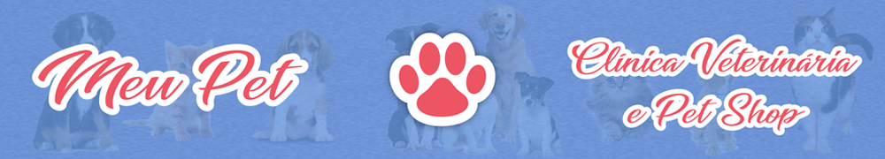

|  |
| HOME | PRODUTOS | CONTATOS | QUEM SOMOS |
|---|
Quem Somos: Conectando Corações Peludos ao Redor do MundoSomos um grupo de apaixonados por animais, unidos por uma missão comum: promover o amor, o cuidado e a felicidade dos nossos amigos peludos de estimação. Movidos pela crença inabalável de que cada latido, ronronar e chilrear merece ser celebrado, dedicamos nossos esforços a criar um espaço onde os laços entre humanos e animais floresçam. Em Meu Pet, não somos apenas uma plataforma - somos uma comunidade vibrante e acolhedora, onde amantes de animais de todas as origens se reúnem para compartilhar histórias, trocar conselhos e inspirar-se mutuamente. Desde aqueles momentos hilariantes e adoráveis capturados em vídeo até as reflexões profundas sobre o que significa ser um guardião responsável, estamos aqui para cada passo da jornada ao lado do seu pet. Nossa paixão vai além de simplesmente fornecer produtos ou serviços - é sobre criar um movimento de compaixão e empatia em direção aos nossos amigos de quatro patas. Estamos comprometidos em promover a conscientização sobre questões de bem-estar animal, incentivar a adoção responsável e inspirar um estilo de vida que honre a incrível diversidade e beleza do reino animal. Seja você um dono dedicado, um amante de animais em busca de inspiração ou simplesmente alguém que adora uma boa dose de fofura, você encontrará um lar em "Meu Pe". Junte-se a nós nesta jornada emocionante enquanto celebramos a magia da conexão humana-animal e trabalhamos juntos para tornar o mundo um lugar melhor para todas as criaturas peludas que chamamos de família. |
|
Entre em contato através do e-email: contato@meupet.com.bor
ou utilize o nosso telefone de contato (WhatsApp): 619999-9999 |